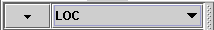

The Symbol List also contains methods for sorting the symbols. The symbols can be sorted either by metric value or by metric name. At the top of the Symbol List is a drop-down list:

This is the mechanism for sorting the list. To sort the symbols by a metric value simply pull down the right hand side section and select the metric that you wish the symbols to be sorted by. The button to the left changes the direction of the sort. The image above shows a descending (large values first) sort. Clicking this changes the sort from descending to ascending order (by the same metric value). Your symbol list will be sorted and displayed in both the right and left-hand panes of the view.
There is another option for sorting metrics. With the cursor in the left-hand list, use the right-click on your mouse. You will then see a pop-up list of metrics, presented alphabetically. Selecting a metric from this list will change the sort in the left-hand list.
If you wish, you may add another level of information to the right-hand list. This feature is only available within the Histogram view. Select the Histogram tab. You will see a drop-down list available above the histogram. Choose a metric from this list. The resulting view will display symbols in either ascending or descending order, based upon the metric selection in the left-hand pane. However, the histogram values displayed by these symbols will reflect the metric selected in the right-hand pane.
For example: sort the symbols in the left-hand pane by LOC (Lines Of Code), in descending order. From the right-hand view, select the QCP_MAINT (Quality Criteria Profile - Maintainability). Your view will then list symbols in descending order, according to the lines of code in each symbol. Next to each symbol is the QCP_MAINT value, indicating the corresponding ease of maintenance for that code.
Note: sorting a large list may take some time.